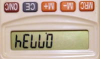

Problem #4: Calculator Palindromes
Background Information: A number which is palindromic is a number which is the same when read either from left to right or from right to left. For example, 9, 11 and 121 are numeric palindromes, while 10 is not (no leading zeroes allowed). A calculator palindrome is a number which is the same when read left to right on a calculator as well as left on a calculator inverted (upside-down). Flip this page upside down to see what each digit is converted to when turned upside down.
Programming Problem:
Input: M and N (one input value per line), two years in the 21st century. Note: The year 2000 is not in the 21st century and the year 2100 is.
Output: The number of Pythagorean days in the given range (inclusive) followed by the dates in chronological order.
Example 1: Input: 2002
2014
Output: 6
3-4-5
4-3-5
6-8-10
8-6-10
5-12-13
12-5-13
